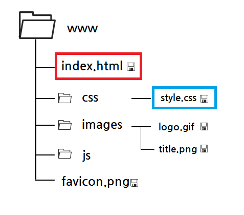

프로그래밍 언어, 운영체제 등에서 컴퓨터의 파일을 찾아가는 방법을 경로라고 하며 절대경로와 상대경로로 구분하여 사용 할 수 있다.
최상위 디렉토리부터 해당 파일까지 경유한 모든 경로를 전부 기입하는 방식이다.
현재 파일이 존재하는 디렉토리를 기준으로 해당 파일까지의 위치를 작성한 경로이다.

www : 최상위 폴더
index.html : 현재 위치
style.css : 최종 목적지
절대경로는 www폴더에서 css폴더의 style.css파일까지의 경로이다.
www/css/style.css
상대경로는 index.html의 상위폴더인 www폴더에 접근 후 css폴더의 style.css파일까지의 경로이다.
../css/style.css